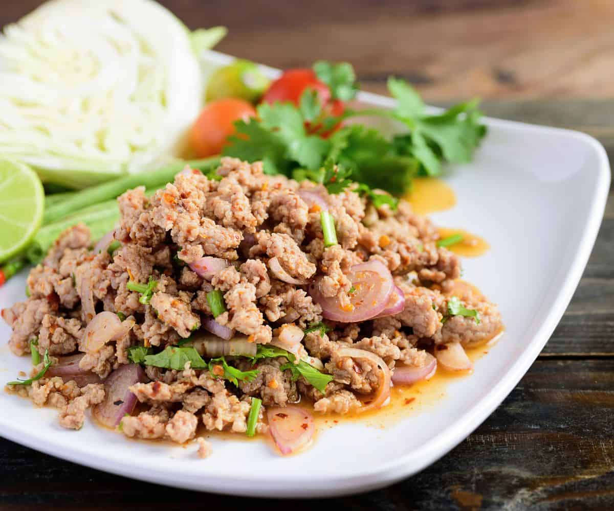

Larb

Larb Facts
Larb is a ground meat salad originating from Northern Thailand.
It has many fresh herbs and vegetables, as well as lime and
chili sauce. It's mostly meat, but it's also served with a lot
of vegetables and, unlike what you might think of when you hear
the word salad, is also always served with sticky rice. The
sticky rice is an essential part of the dish, and is eaten
alongside the meat and vegetables, not after it.
I have been informed that karb is supposed to be very spicy, but
the amount of spice in the dish tends to vary based on restaurant.
If you are making this at home, you can feel free to make it as spicy or
not as you want, as many Thai dishes have a higher level of spice than
what people in the United States are often used to. As for me, I enjoy
very spicy dishes, so I often add extra spice to mine, but for those who
do not, please be aware of the ingredients in your meal.
Larb Ingredients
- Uncooked White Sticky Rice or Jasmine Rice For Toppings
- Ground Pork
- Shallots
- Fresh Mint Leaves
- Cilantro
- Green Onion
- Sawtooth Coriander/Culantro
- Lime Juice
- Fish Sauce
- Chili Flakes
- Cooked Sticky Rice
- Fresh Raw Vegetables like lettuce, cabbage, long beans, and cucumber
Larb Instructions
- Toast the raw rice in a pan over medium high heat, stirring constantly, until it browns
and gets dark brown.
- Grind the rice up with a grinder or a mortar and pestle into a powder.
- Add two tablespoons of water to a medium pot over high heat, then add the ground pork to the pot
and stir it constantly to break it up, removing when the pork is fully cooked.
- Add the shallots into the pot with the pork and stir, cooking lightly.
- Add the fish sauce, lime juice, toasted rice powder, sawtooth coriander,
chili flakes, cilantro, and green onion to the pot, stirring to mix and
adding seasoning to taste. You can add a tiny bit of sugar to make it
less tart, but keep in mind that the sticky rice is
intended to balance it out later and it is not supposed to be a sweet dish.
- Stir in the fresh mint leaves when ready to serve. Mint leaves blacken when
exposed to heat, so be careful when you stir it in.
- Garnish with more mint leaves and chili flakes, then serve with
your fresh crunchy raw vegetables and sticky rice.
Home